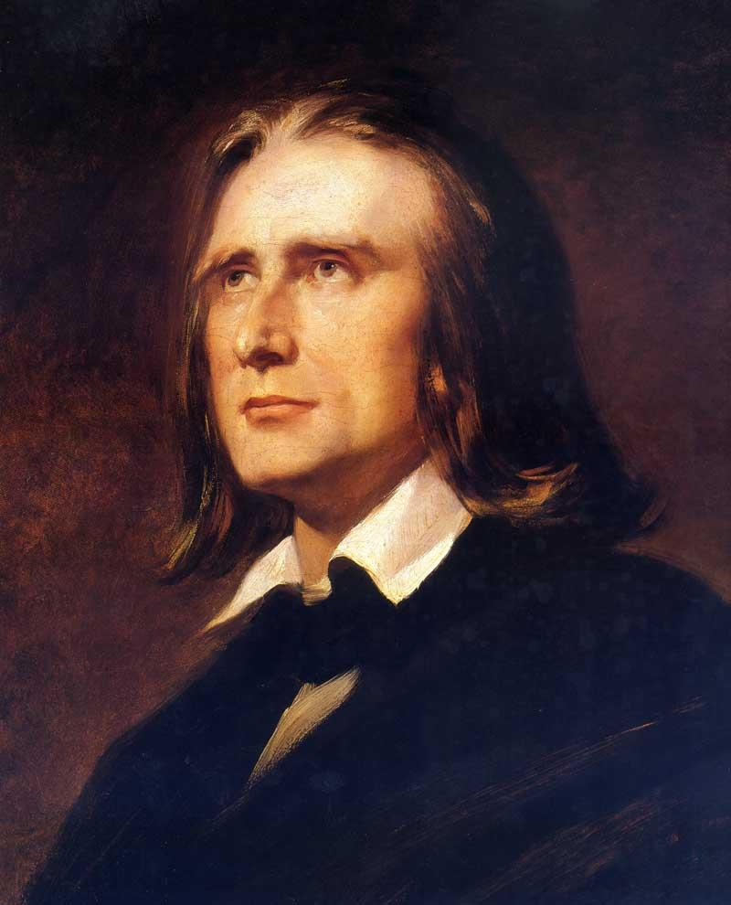
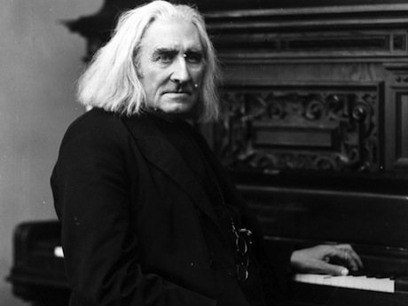

Franz Liszt
Liszt's lasting impact on music history is gargantuan. Not only was he a phenomenal composer, but most music scholars consider him the best piano virtuoso of all time. With a talent for showmanship, Liszt staged spectacular performances and has since captured the imagination and hearts of many.

Even in his youth, Liszt demonstrated a natural ability at the keyboard that placed him well above the ranks of other child prodigies. While very skilled as a piano player and in improvisation at an early age, his talent as a composer wouldn't emerge until early adulthood. He studied with musicians Czerny and Salieri in Vienna and studied privately with Anton Reicha. Liszt soon became a prominent figure in Parisian society. Much of his romantic entanglements provided material for gossip in the day as well as his legendary performances on the keyboard. Inspired by the violinist virtuoso Paganini, who is regarded by scholars as the best violin player to have ever existed, Liszt became determined to perform at the same level on the piano. At this stage, Liszt spent an increasing amount of time to composition. His original piano compositions were written in such a manner that would prove to be very technically demanding for the musician as well as the instruments. His famous Hungarian Rhapsodies are a prime example of playing difficulty as well as his Transcendental Etudes (1851. Soon, Liszt mastered the basics of orchestration such as works like the Piano Concerto No. 1 (1849), Faust, 1854-1857, and Dante, 1855-1856.

Eventually, Liszt settled down in his later years. He joined the Catholic Church and devoted much of his creative genius to works of liturgical nature. His flashy compositions took on a more introspective nature including works such as Nuages gris (1881), a style only explored in his later years. Liszt died in Bayreuth, Germany, on July 31, 1886.
Liszt's musical style is unique in comparison to other famous composers of his day. His compositions tended to reflect and embody extra-musical things such as painting or poetry, often referred to as programme music. In addition, he pioneered the technique of thematic transformation which involves changing the theme of a song using modulation, inversion, and permutations. As a result, some of his pieces carry an almost atonal nature at times. His piano compositions, which make up the majority of his music are of advanced difficult and showcase his skill as a virtuoso pianist.